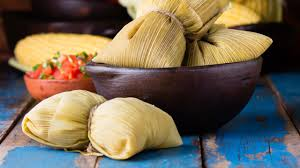

Para empezar se retira cuidadosamente las chalas (hojas del maíz). A las primeras las vamos a descartar porque son muy gruesas y están muy sucias, así que no nos están sirviendo. Y a las que siguen vamos a sacarlas cuidadosamente, porque van a ser los paquetitos donde vamos a envolver la humita. Las últimas son más claritas y además son más maleables; lo que nos va a permitir trabajar con más facilidad. Si querés, podés sacarles las puntas, que en general están bastante maltratadas. Y a todo lo que sirve, lo reservamos para usarlo en el armado. Un paso importante es limpiar las hojas.
En segundo lugar, sacamos al maíz todos los pelitos o barbita y les cortamos la punta para sacarle la parte dura.
A continuación vamos a desgranar, porque necesitamos que quede el pellejito del grano de choclo. Una vez que hayas desgranado todos, vas a reservarlos.
Para moler el grano, las familias norteñas utilizan una moledora de maíz, pero si no la tenemos, hay dos opciones:
1. Una es usar una procesadora multifunción. Y en este caso vas a ver que la textura queda un poco más gruesa, como más rústico, pero con este método la humita te va a quedar un poco más desgranada.
2. La segunda opción es utilizar un mixer o licuadora de mano. También vas a trabajar con muy poca cantidad porque podés malograr el electrodoméstico. De esta manera se obtiene una textura mucho más sedosa.
Vos podés elegir y probar lo que más te guste.
⚠ Atención: vamos a guardar los marlos (hueso del maíz) porque también los vamos a usar en otra parte de la preparación. Así que no los tires a la basura.
Humitas en chala, relleno o recado Y acá es probable que empiecen a diferir algunas variantes de la humita. grasa bovina o grasa de pella. También se puede usar manteca o aceite para rehogar cebolla y morrón. Esto es opcional y depende del gusto de cada uno. Un poquito de sal para que aflojen los vegetales. Con esta textura se lo agregás al choclo procesado. También se puede procesar el morrón con el choclo para darle más color(opcional). Una vez incorporado al choclo, vamos a poner otra variante, que en este caso es albahaca o cuando a procesa directamente con el choclo. ¿Humita salada o dulce? Ahora le agregamos una cucharadita de sal. Tenés también la versión salada, pero como en el norte las comemos generalmente dulces, aquí le agregamos un poco de azúcar. Te recuerdo que, a diferencia del maíz amarillo, el blanco tiene menos sabor, por lo tanto, también es menos dulce. Así que, si usas el amarillo, no es necesario que le agregues tanta azúcar.
Ahora vamos usar las tiritas para enrollar los paquetitos de las humitas. Se recomienda aprovechar las chalas que son chicas o que por ahí están rotas para generar las tiritas que van a servir para atar las humitas. Tenés que tomar un pedazo de unos dos centímetros y hacerle un nudo en el extremo; para luego poder abrirlo de la otra parte.
Ahora vamos con algo superimportante, que es el queso. Aquí usamos queso criollo, ya sea de vaca o de cabra. En este caso, se corta en cubitos y también voy a agregarle queso cremoso. Vos decidís lo que más te guste.
Y ahora la preparación lista.
Por último, nos toca finalmente armar la humita.
1⃣Vas a superponer dos chalas más o menos del mismo tamaño y le vas a agregar una porción más que generosa del relleno justo en el centro del paquetito.
⛔️Es importante que no la llenes de más porque se te puede perder el relleno en la cocción.
2⃣Doblás los extremos, luego juntás los lados opuestos y terminás atándolo
Terminada la producción, podés refrigerarlas para consumirlas más tardes o cocinarlas en el momento.
Para cocinarlas, ponemos a hervir agua en una olla, donde vamos a agregar unos marlos de choclo para que le dé más sabor. Vas colocando las humitas con mucho cuidado. Hay mas opciones como: acomodarlas y las ponen el marlo arriba para que las humitas no floten. Es totalmente válido.
A partir de este momento, como no son muy grandes, vas a cocinarlas por unos 50 minutos o casi una hora.
¿Cómo sabés que las humitas están listas?
Porque la chala cambia de color. Como ves en esta imagen, cuando pasan de verdes a amarillas, quieren decir que ya están listas. Momento de servirlas.
❄En el caso de que quieras frizarlas, tenés que dejarlas enfriar, guardarlas en una bolsa y llevarlas a congelar. Te duran hasta meses.
Las humitas son una comida tipica en el norte de Argentina y entre otros paises como Bolivia, Chile, Ecuador, Perú y sur de Colombia
¡Espero que disfrutes tus humitas!
